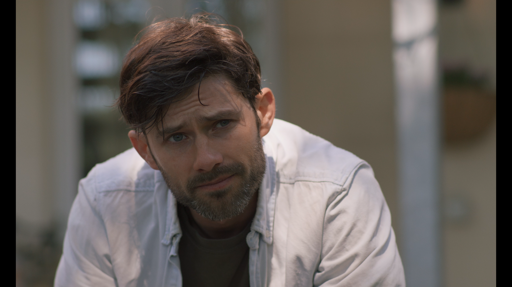
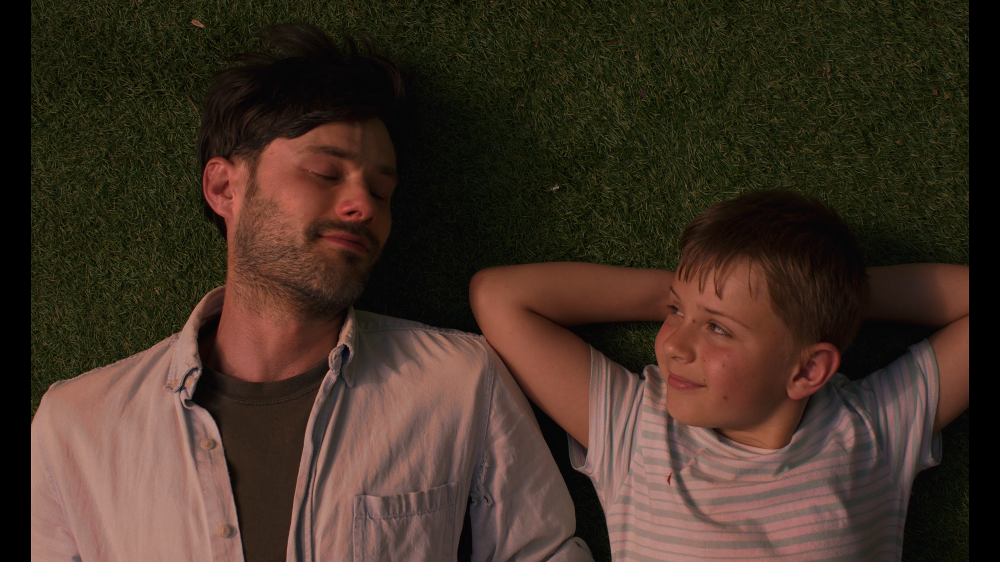
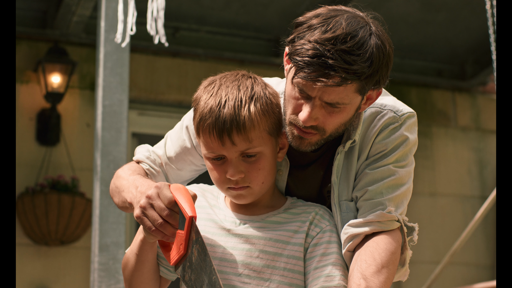
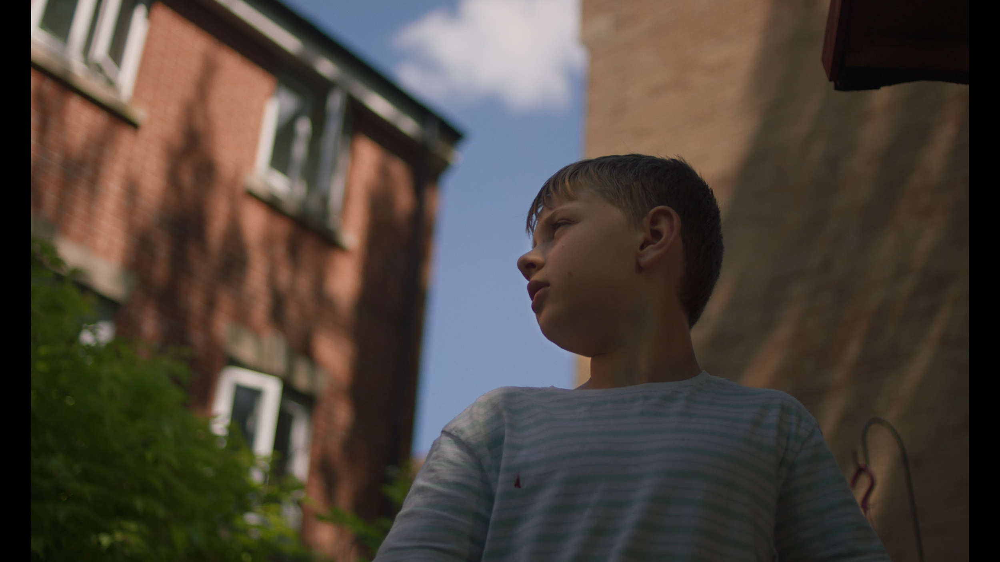

Shed
Shed is a 17-minute short funded by The Region of Normandy about a father and son fixing-up their garden shed.
Shed was written by Angie Piera and myself during the first national lockdown in an attempt to create something that fit within the production limitations of a post-covid world. By the end of 2020 funding was sourced and the film was then shot in Bristol in June 2021.
The project was a major logistical achievement with 18 pages of script shot in just 5 days despite the challenges presented by the unreliable English weather. As my first professionally funded film, Shed was a brilliant learning experience.
Shed first premiered at the Off-Courts Film Festival located in the French seaside town of Trouville-sur-mer with more screenings to come in the near future.



